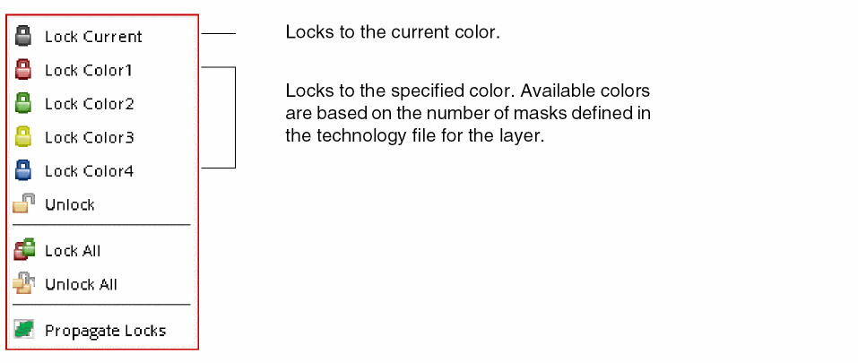

Locking and Unlocking Colors 
When using the Multiple Patterning toolbar, the type of color locking performed is dependent on whether the shapes have already been selected.
To lock or unlock the color on a shape or a set of shapes, or the entire design in the layout:
-
Click the Lock Colors in the Multiple Patterning toolbar.
-
Choose the desired action from the drop-down list.

|
Action
|
Shapes are preselected
|
Shapes are NOT preselected
|
|
Lock Current
Lock Color1
Lock Color2
Lock Color3
Lock Color4
|
Locks the selected shapes to the specified color using Color Attribute Locking.
|
Locks the selected shapes to the specified color as shapes are selected. For information, refer to Post-Select Lock and Unlock.
|
|
Unlock
|
Sets the color state for the selected shapes to unlock.
|
Unlocks the color of shapes as shapes are selected. For information, refer to Post-Select Lock and Unlock.
|
|
Lock all
|
Locks all the colored shapes at the top level or at the current editing hierarchy level (top level), as described in Locking and Unlocking All.
|
|
Unlock all
|
Unlocks all the colored shapes at the top level or at the current editing hierarchy level (top level), as described in Locking and Unlocking All.
|
|
Propagate Locks
|
Propagates locks for connected shapes, same color groups, and net-based pre-colored shapes, as described in Propagating Locks. You can also propagate locks automatically when the color engine is on and you set certain Multiple Patterning Options, as described in Color Locking on Connected Shapes.
|
Locked shapes have a bold outline. For a description of the colors and color styles used to indicate locking, refer to Color Representations. For more information on color locking, refer to Color Locking.
Return to top